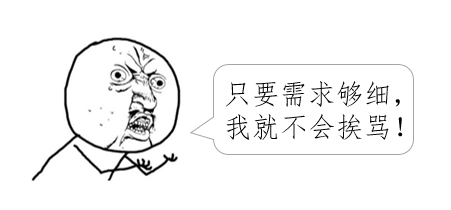
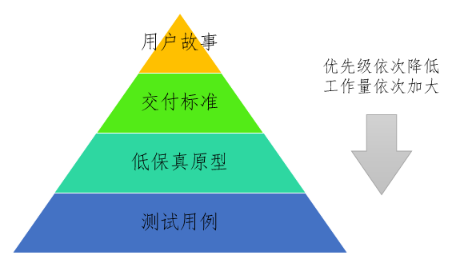

posted 2016-07-27
什么样的需求文档能让程序员满意？
整理自我的知乎答案：https://www.zhihu.com/question/48210161/answer/113446575
很多人认为：

那么产品经理对产品细节需要给出到什么程度，才不会被开发骂？
这个问题要成立，必基于以下认知（我称之为“足细不骂”命题）：
只要产品经理对产品细节给到足够细致的程度，就不会被研发骂！（后面一律将开发改为研发，读到后面大家会知道为什么）
“足细不骂”命题显然是不成立的。
产品经理被骂的原因，我随便列举几个：
- 你给的需求不够细致，我判断不出来应该怎么做，所以要骂你（简称：不细而骂）
- 你给的需求根本逻辑错误，需求越细跑的就越偏，所以要骂你
- 需求描述的条理不清晰，让我看不懂，我就骂你
- 需求前后矛盾，如果我按照你的细节A做，就做不到你的细节B
- 可见需求不够细致，只不过是研发骂产品的理由之一。即便产品经理把需求描述到足够细致的程度了，研发依然会根据后面三个理由开骂。
因此：
细节帮不了你避免挨骂
前面列举的四个研发开骂的理由中，不细而骂是最无理的一个。因其它三个理由挨骂，产品都活该，但是如果研发“不细而骂”，产品经理有可能是被冤枉的。
如果需求本身逻辑通顺、条理清晰、前后一致，那么细节作为一个相对的量度，要做到什么程度，是要根据研发人员的能力而定的。不细而骂中，产品经理的错误本质上是高估了研发的能力。这时产品经理理应去责备HR，因为HR不仅没能找到足够聪明的研发人员，甚至找到了一个因为自己笨所以骂人的流氓。
以手机注册为例，像如何获取验证码这类的所谓的“细节”，经验丰富、聪明负责的研发是不需要产品经理赘述的；但如果研发是个新手小白，他也绝不会因为自己的无知而张口骂人。就算真的只是细节不足的问题，研发找你补充就好了，何必张口骂人呢？
由此可以判断，研发骂人的原因 ，更可能因为另外三个原因：逻辑错误、条理不清、前后矛盾，重点绝不应该仅放到产品细节上。
下面我总结了产品经理的防研发骂的三大技巧。这三大技巧将确保你的需求符合逻辑、条理清晰、前后一致，并且将需求做到恰到好处的细致，并和研发和睦相处，由被骂变为相爱。
保证是真药，但不保证有疗效。
依照惯例，没有耐心看的可以跳到最后看终极答案。
防骂技巧（一）：使用正确的敏捷
如果你们实施的是敏捷，那么直接按照user case的方式描述需求，就是在侮辱研发的智商。
让我们复习敏捷宣言的头两条
Individuals and interactions OVER processes and tools（个体和协作胜过流程和工具） Working software OVER comprehensive documentation（可用的软件胜过完备的文档）
再让我们温习敏捷十二条原则中的一条：
Face-to-face conversation is the best form of communication (co-location) 面对面沟通是最有效的沟通方式。
这三句话你也许知道，但未必真正的理解他们的含义。
如果你们真的是在实施敏捷，那么请你们实施的是尊重敏捷宣言和原则的真正的敏捷。
因此这些做法都是错的：
- 以为敏捷没有详细设计这个阶段就意味着不需要做详细的设计。
- 妄图依靠一个细致到家的文档扔给研发，就可以干等着研发给你交付一个和你想象的一模一样的结果了。
- 以为产品经理只负责产品的设计，研发只负责写代码。产品经理将研发当成键盘敲击手，研发将产品当成需求加工机。
正确的做法是：
- 敏捷也要做详细的设计，但详细的设计绝不仅仅是产品经理埋头做出来的，更应该是在和研发人员沟通的过程中，大家共同逐步设计、完善、认可的产物。
- 产品经理和研发的沟通，绝不应该用文档工具替代，更重要的是要面对面的交谈，要明确对方认可并基本了解即将要实现的目标。
- 别忘了研发（Research & Develop）的本意。研发人员绝不是码农。很多团队甚至研发自己都忽略了这个职位研究的职能。在敏捷团队里，彼此信任，重点不是人品，而是专业能力。为什么要彼此信任，因为产品不是产品经理一个人的职责，产品的细节需要产品经理和研发共同制定。
当包括团队负责人、产品经理、研发在内的团队所有人都有了敏捷的共识，题主所提出的问题，比如注册功能在研发过程中遇到各种事先没有描述清楚的问题，也就迎刃而解了。此时的产品经理应该更主动的和研发沟通细节问题，而研发也应该和产品经理共同承担起产品的研究职责。
防骂技巧（二）：使用用户故事
描述需求的方法是有讲究的。
敏捷中最通行的需求描述是user story（用户故事）。用户故事的标准格式如下：
As a
, I want to , so that . 作为一个【什么角色】, 我想要【开发什么功能】， 以便【实现什么价值】
这是个固定的三段论，不要自作聪明的修改，要完全遵照以上格式撰写。 这是个固定的三段论，不要自作聪明的修改，要完全遵照以上格式撰写。 这是个固定的三段论，不要自作聪明的修改，要完全遵照以上格式撰写。
因为这样的三段论，就已经将需求的视角、目标、本意讲清楚了。如果这句话表达准确，团队的任何人都能由此直窥需求的本质，避免了我在前面说的四个产品经理挨骂的后三个理由：
- 用户和价值的规定确保了逻辑的正确
- 简单的句式确保了条理的清晰
- 凝练的表达省略掉了产品细节，就不会出现前后矛盾的问题
仍以题主提出的注册功能为例，用户故事是这样的：
作为中国境内的手机用户，我希望App能实现通过手机号码注册，以便在使用App过程支持通过手机找回密码、无密码登录、通知事项可以通过短信接收等功能
这个用户故事界定了用户（手机号码的格式），界定了功能（手机号码注册，不包括登录、找回密码等），以及为什么要用手机号码注册（因为用户说我要我要我要）。
用户故事要求粒度逐步拆分到足够小。就是说如果一个用户故事可以再拆分，就尽量拆分，直到一个研发人员能用几个小时的时间完成开发。比如这个故事就仅限于注册，登录、找回密码等功能已经拆出去了。
至于手机号码注册功能里面涉及到的所谓的细节问题，对于一个足够优秀的研发人员而言，应该有充足的知识积累。比如要进行前后端的手机号码格式验证，比如如何发送验证短信，比如验证短信的时长要求等所谓的“细节”问题，顶多和产品沟通一两句话就能确定了的。
用户故事的弊病是缺乏细节的展开，但基于良好的保守的敏捷原则，细节完全可以通过面对面的充分沟通和团队间的尊重和信任解决。
如果你的团队，和全世界绝大多数团队一样，是一个向敏捷状态靠近的团队，那么还可以试试以下的方法。
防骂技巧（三）：对用户故事的补充
现实中团队不太可能如敏捷要求的那么理想，所以只用用户故事很可能不够。我通常用以下几种方式描述需求：
- 用户故事
- 交付标准
- 低保真原型
- 测试用例

交付标准是描述用户故事中的【要开发的功能】的，就是说当研发做出来的成果，能够符合哪些标准，就算是合格。交付标准是一个列表，每项要交代交付内容和通过标准。仍以手机注册为例：
- 填写手机号码的控件必须是数字类型，激活焦点后引导系统输入法转为数字输入模式。
- 验证码有效期为1个小时，或在下一个验证码发出时失效。
- 确保三大运营商号码皆能在30秒收到短信。
- 确保短信不被主要防骚扰软件屏蔽。
- ...
原型方面，我一直反对产品经理使用axure。准确的说axure是一款交互设计工具。使用axure会诱导产品经理将注意力集中到视觉和交互设计方面，反而在需求逻辑上缺少雕琢。一般团队都有专业的视觉和交互设计师，产品经理还是要将注意力放到用户、功能和商业价值以及全生命周期的管理上。
测试用例看作是更细致更严格的交付标准。格式是：
前面的流程略 在【什么情况|环境|系统|网络下】，对【什么控件】，进行【什么操作】，应该出现【什么效果】 后面的流程略
对比较复杂的需求，要提前准备时间撰写测试用例。敏捷提倡测试驱动开发。在研发过程中，测试用例可以指导研发，测试过程中，测试人员也要依照用例进行测试。当然，测试用例的撰写和执行，由谁来做，要根据团队的具体情况规定。以我个人的经验，除非有专业的测试团队，否则就不要写测试用例了。
用户故事、交付标准、低保真原型、测试用例，工作量依次增加，因此也应该按序实施，如果能在用户故事阶段表达清楚，就不要写交付标准，能用文字表达清楚，就不要画原型图。